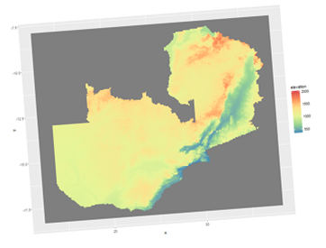
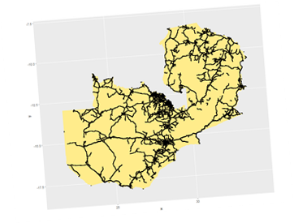
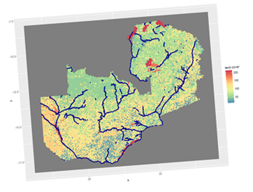
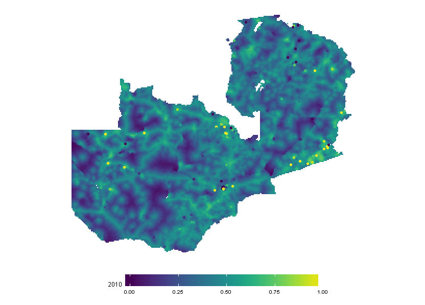
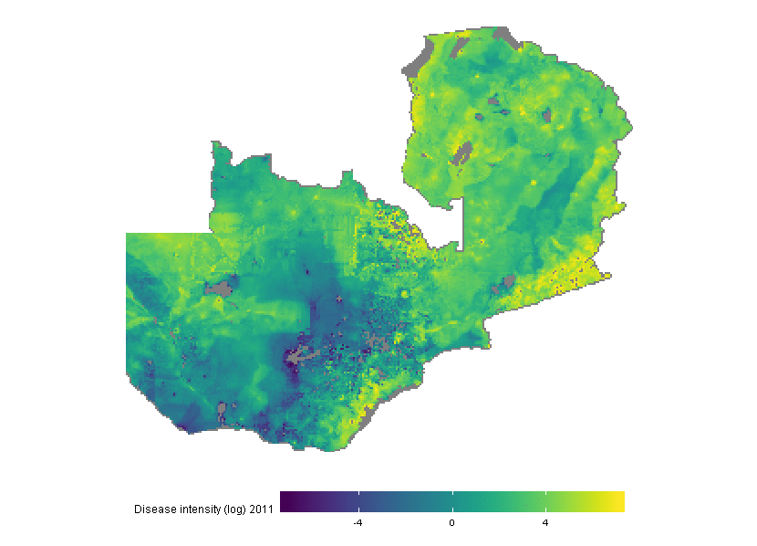
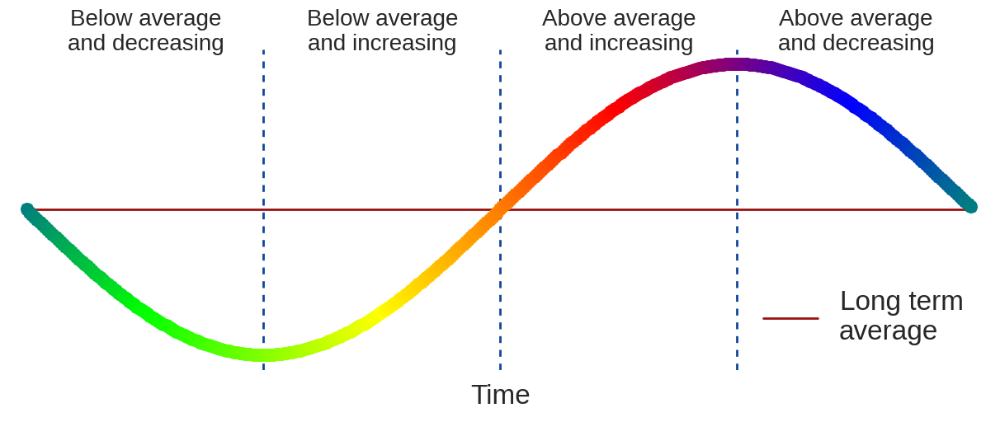
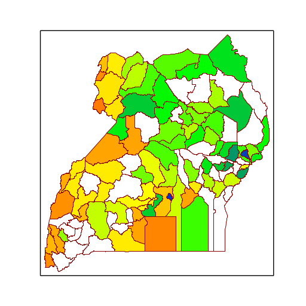

Background
Demographic and Health Surveys (DHS) collect information about household
indicators related to wealth in different countries across time. One such
indicator is access to electricity. Unfortunately, due to the varying
periodicity and spatial coverage of these surveys, the information they
contain is not representative at a regional scale. Fortunately, access
to electricity can be indirectly measured via remote sensing.
What we did
National Oceanic and Atmospheric Administration stellites have been
capturing images of nighttime light globally since 1992. While
nighttime light images do not immediatly translate into electricity
access of households, we defined a model to lear the association
between both. We used information from 73 DHS surveys, light intensity
extracted from inter-calibrated nightlight images and population density.
We followed a Bayesian model based geostatistics approach, and used
integrated nested Laplace approximation (INLA) to make inference on
household's electricity access in Africa. The model is used to predict
the probability of a household having electricity annualy from 2000 to
2015 across Africa at a 5Km resolution.

More information
This work is part of the Vector Control program of the
Malaria Elimination Initiative at UCSF Gloabal Health Group.
This is still work in progress.
Background
Routine health facility outpatient data are an imperfect measure of
disease incidence in communities. Two main difficulties arise when
trying to estimate community level incidence from cases reported at
the health facility. First, health records are only representative
of those individuals who sought treatment. Thus, the number of
cases captured is likely to be an underestimate of the actual number
of cases captured. Second, as information on the location of residence
of cases is often lacking, catchment boundaries and populations are
often uncertain.
What we did
We defined a probabilistic model that encodes the decision process
of an individual when seeking for treatment and choosing a health
facility to attend. Our model factors travel cost (based on distance
and maximum speed allowed by the terrain) as well as the types of
health facilities in close proximity. The model allows for overlapping
weighted catchment areas to be defined for each health facility
depending on its type, travel cost and location of other facilities.
Travel cost



The travel costs to a health facility were defined using information
of land cover, main roads and water bodies.
Treatment seeking and disease incidence


The left figure shows the likelihood of seeking treatment when that
a patient presents symptoms of disease, depending on
the location of the household in the country. The right figure shows the
anual estimate of infections (log scale) per 5Km in Zambia.
More information
This is still work in progress.
Background
In Uganda, malaria is among the leading causes of morbidity
and mortality. Different types of interventions can be carried
on to prevent and treat malaria. Their success depend on
how well the disease can be anticipated and how fast the
population reacts to it.
What we did
We developed a method to monitor the progress of the
number of infections of a particular disease. The method
is based on Gaussian processes and allows
to study the effect a time series components individually
by isolating them and explore the short term variations.
With this model, we can clasify the infection phase that the
districts in Uganda are going through.


In the left panel, the multicolored line represents the number
of disease cases across time, while the red line represents the
long term trend. The first section, corresponds to a number of cases
below the long term average and decreasing. The second section corresponds
to an increasing number of cases, but still below the trend. The third
section corresponds to an increasing number of cases above the trend.
The last section corresponds to a reduction in the number
of cases, but still above the long term average.
The right panel, shows the stage of different districts in Uganda across
different weeks. White color means that the short term signal is too
weak in comparison to the noise.
More information
This work was presented at the
AALTD 2015 Workshop.
Here is the paper.
Collaborators
Where is Uganda?
Funded by